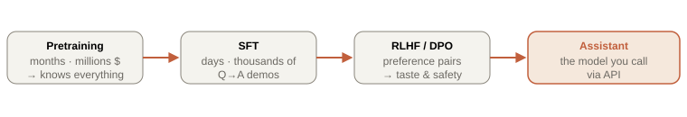

Chapter 4. How models are trained: pretraining → alignment
A raw pretrained model is a brilliant autocomplete that will happily continue "What is the capital of France?" with "What is the capital of Germany?" — because it's completing a pattern of quiz questions, not answering you. Turning that into a helpful assistant takes three more stages. Understanding this pipeline tells you what fine-tuning can and cannot fix — the judgment that determines whether you reach for fine-tuning or RAG, the most consequential architecture decision in applied LLM work.

4.1 Pretraining: compression as intelligence
Objective: predict the next token over trillions of tokens of internet, books, and code. That's it. The profound part is why this produces intelligence: to predict the next token of a murder-mystery's final page, or the answer line of a math problem, or the closing brace of a function, the model is forced to learn grammar, world facts, arithmetic, and reasoning — because those are what reduce prediction loss. Compression and understanding turn out to be nearly the same thing. The result is a base model: it can complete any text but has no notion of being a helpful conversational agent.
Scaling laws and the Chinchilla correction
Kaplan et al. (2020) showed loss falls as a smooth power law in parameters, data, and compute — predictable enough to forecast a model's loss before training it, which is how labs justify eight-figure runs. Hoffmann et al. (2022, "Chinchilla") corrected the recipe: for a fixed compute budget, most large models were undertrained — you should scale parameters and data roughly together (~20 tokens per parameter). A Chinchilla-optimal 70B model beat a 175B model trained on less data. The modern twist: for models meant to be served at scale (Llama, etc.), labs deliberately "overtrain" small models past compute-optimality because inference cost, not training cost, dominates a deployed model's lifetime bill.
4.2 Supervised fine-tuning: learning the assistant format
Take the base model, continue training on curated (instruction, ideal response) pairs — tens of thousands, human-written or curated. Same next-token objective, but now the data demonstrates the behavior we want: questions get answered, instructions get followed, a consistent helpful persona emerges. After SFT you have an instruction-tuned model that is genuinely useful but not yet tuned for nuanced human preferences (helpfulness vs. harmlessness trade-offs, tone, refusal calibration).
4.3 RLHF and DPO: learning human taste
Some qualities are easy to recognize but hard to demonstrate in a single "correct" answer — helpfulness, honesty, harmlessness. So we learn from comparisons:
- RLHF (Reinforcement Learning from Human Feedback): humans rank pairs of model outputs → train a reward model to predict those preferences → optimize the LLM (via PPO) to maximize predicted reward, with a KL penalty keeping it from drifting too far from the SFT model. Powerful, but a fiddly multi-model RL pipeline.
- DPO (Direct Preference Optimization, 2023): a mathematical insight shows you can skip the separate reward model and RL loop entirely — the preference data can be optimized directly with a simple classification-style loss. Same goal, dramatically simpler and more stable. Most open models now use DPO or its descendants (IPO, KTO, ORPO).
4.4 LoRA: fine-tuning without the pain
With LoRA rank r = 8: A is 4096×8 = 32,768 and B is 8×4096 = 32,768 → 65,536 params.
Ratio: 65,536 / 16,777,216 = 0.39% — a 256× reduction on that matrix. Across a whole 7B model you might train ~0.1–1% of parameters, fitting fine-tuning onto a single consumer GPU. QLoRA adds 4-bit quantization of the frozen base weights, cutting memory further so 65B models fine-tune on one 48 GB card.
Why "low rank" works: the adaptation needed to specialize a model to a task lives in a far smaller subspace than the full weight matrix — you're nudging behavior, not rebuilding knowledge.
4.5 The decision that matters: fine-tune or RAG?
| Need | Right tool | Why |
|---|---|---|
| Add/again-changing facts (docs, tickets, code, prices) | RAG | Pretraining installs knowledge; fine-tuning adds little capacity for new facts and can't cite sources or be updated cheaply |
| Fixed output format / JSON / domain jargon / tone | Fine-tune (LoRA) | Behavior and style live in weights; a few thousand examples reshape them reliably |
| Proprietary reasoning patterns / a narrow skill | Fine-tune, sometimes + RAG | Teaches how to think about a domain; RAG supplies what to think about |
| Reduce latency/cost of a long fixed prompt | Fine-tune or prompt caching | Bake repeated instructions into weights, or cache them (Ch 11) |
| Need provenance, freshness, deletion (compliance) | RAG | You can show sources, re-index in minutes, and delete a document — none possible with weights |
The one-sentence heuristic to say in an interview: "Fine-tuning changes how the model behaves; RAG changes what it knows — so knowledge problems get RAG, behavior problems get fine-tuning, and many real systems use both." This chapter exists so that sentence is something you understand rather than recite.
labs/04-lora-math/ — a notebook-style TS script computing LoRA parameter counts and memory for various ranks and model sizes, plus a decision-flowchart quiz that drills fine-tune-vs-RAG on realistic scenarios. npm run lab04.Interview ammunition
A stakeholder wants the model to "know our internal documentation." Fine-tune or RAG?
RAG, almost always. Documentation is knowledge that changes, needs citations, and may need deletion for compliance — all RAG strengths and fine-tuning weaknesses. Fine-tuning would bury facts in weights with no provenance, require retraining on every doc change, and still hallucinate confidently. I'd only add light fine-tuning if they also need a specific answer format or house style. Leading with this reasoning (not just "RAG") is what they're testing.
Explain LoRA and why it works.
Freeze the pretrained weights; for target matrices learn a low-rank delta BA (r≈8–64) and use W+BA. Only B and A train — often <1% of parameters — so fine-tuning fits on one GPU and you can hot-swap task-specific adapters. It works because task adaptation is intrinsically low-rank: you're steering existing capability, not installing new knowledge, and that steering lives in a small subspace. QLoRA additionally 4-bit-quantizes the frozen base to cut memory.
What is RLHF actually optimizing, and how does DPO simplify it?
RLHF trains a reward model on human preference comparisons, then uses RL (PPO) to push the LLM toward high reward while a KL term keeps it near the SFT model. DPO proves you can reparameterize this so the optimal policy is expressible directly from the preference data — collapsing reward-modeling + RL into one supervised-style loss. Same objective (match human preferences), far fewer moving parts, more stable — which is why it's now the default in open models.
What did Chinchilla change about how we train models?
It showed the compute-optimal frontier requires scaling data and parameters together (~20 tokens/param), revealing that GPT-3-era giants were undertrained — a smaller model on more data wins for a fixed compute budget. The practical corollary today: for models you'll serve at scale, you deliberately overtrain smaller models past compute-optimality because inference cost dominates the lifetime bill. It reframed "bigger" into "better-balanced."
Why does a base model continue your question instead of answering it?
Its only training objective was next-token prediction over raw text, where a question is usually followed by more text in the same style (another question, a continuation), not an answer. "Answer questions helpfully" is a behavior installed later by SFT and refined by RLHF/DPO. The knowledge to answer is already there post-pretraining — what's missing is the learned convention of the assistant role.
Whiteboard summary
Pretraining = next-token prediction at scale → installs ~all knowledge (base model = autocomplete).
Scaling laws predict loss; Chinchilla: scale data+params together (~20 tok/param); overtrain small models for cheap inference.
SFT = demonstrations → assistant format. RLHF/DPO = preference pairs → taste; DPO drops the reward model + RL loop.
LoRA: W+BA, train only B,A (rank r) → <1% params, 256× fewer on a matrix; QLoRA adds 4-bit base.
Fine-tune = how it behaves; RAG = what it knows. Knowledge → RAG; format/style → fine-tune; often both.
Further reading
- InstructGPT (2022) — the RLHF blueprint · DPO (2023)
- Scaling Laws (2020) · Chinchilla (2022)
- LoRA (2021) · QLoRA (2023)
- Karpathy — Intro to LLMs (the big-picture 1-hour talk) · Hugging Face NLP Course